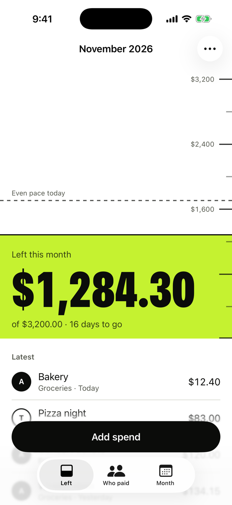
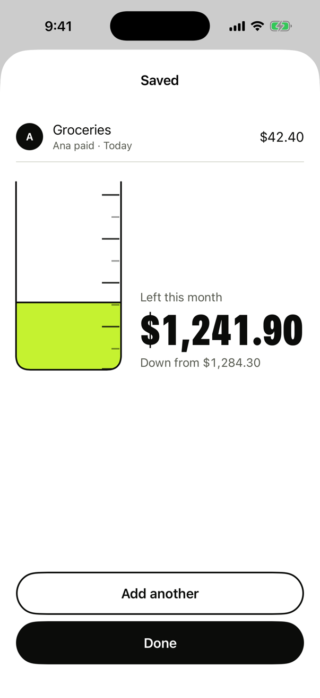
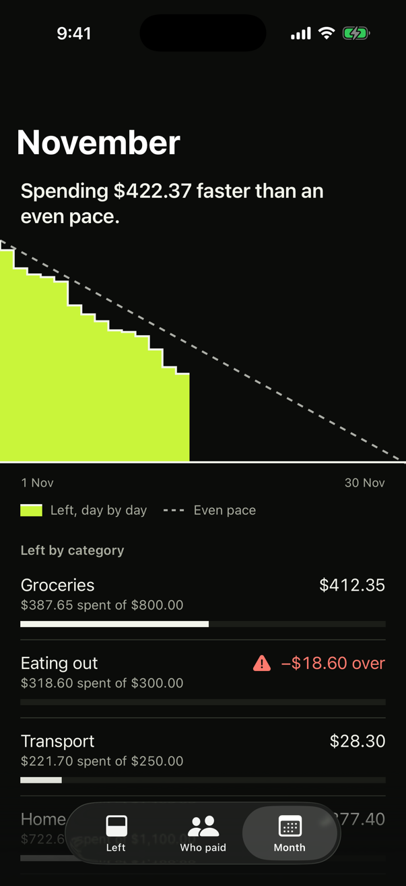
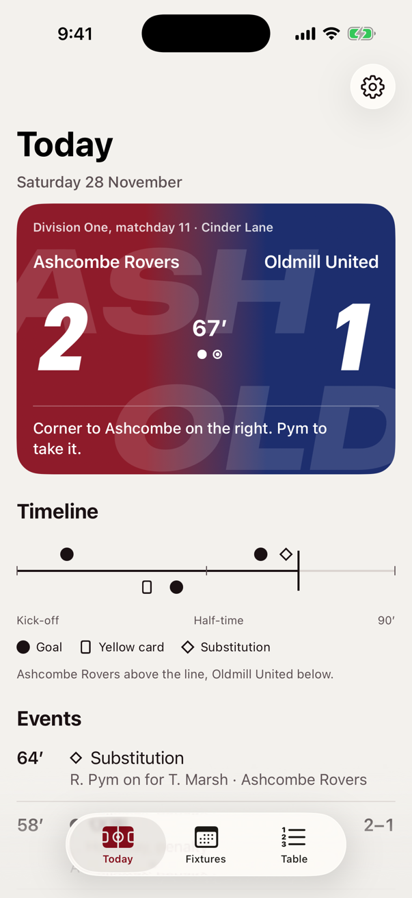
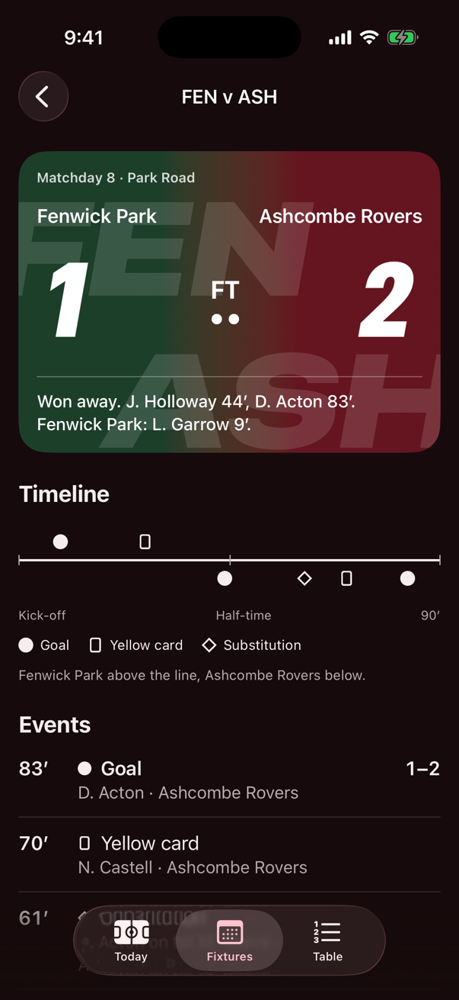
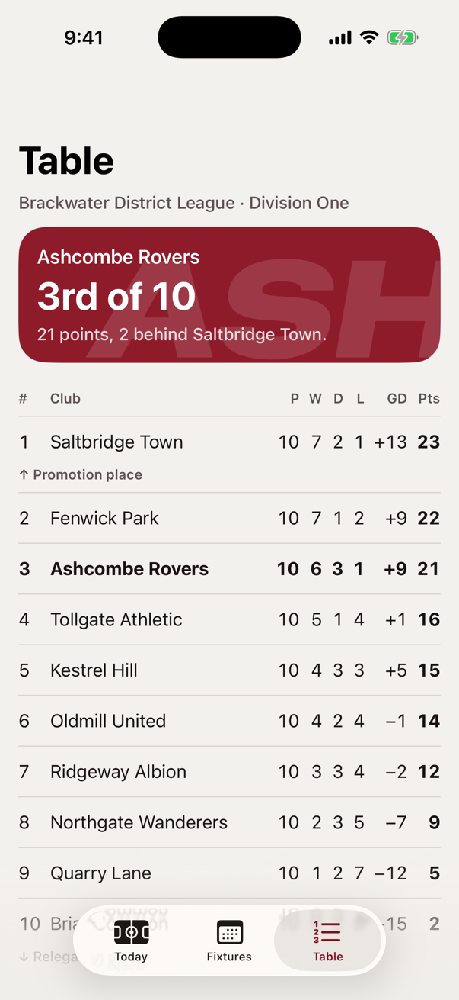
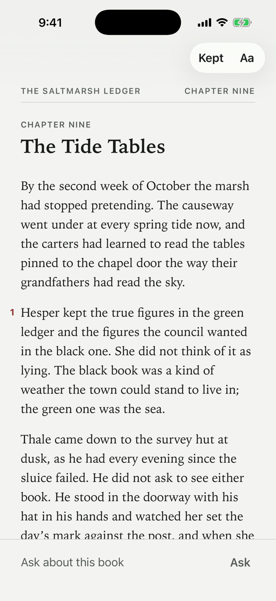
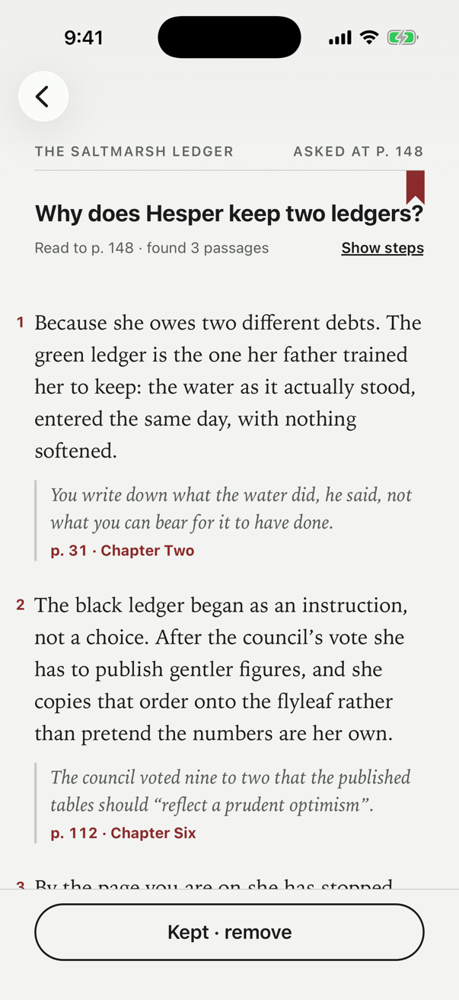
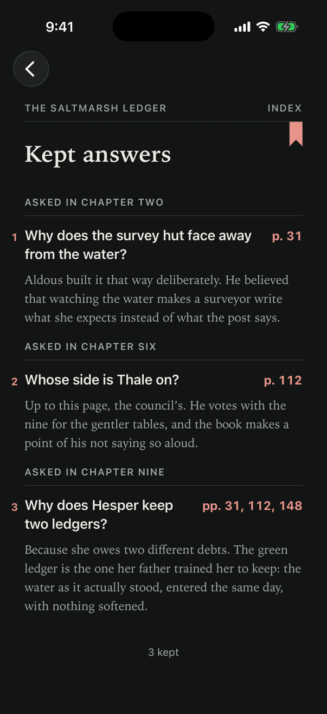

Guide · version 0.1.0
Use taste-mobile
taste-mobile gives a coding agent a direction for a mobile app, makes it write that direction down, and checks the result on a simulator. This page covers the whole of it. It takes about ten minutes to read.
Start here
Install the skill, boot a simulator, ask for an app.
1. Install
npx skills add https://github.com/therynamo/taste-mobile --skill "taste-mobile"Other ways to install
As a Claude Code plugin:
/plugin marketplace add therynamo/taste-mobile
/plugin install taste-mobile@taste-mobileFrom a clone. This links the skill, so git pull updates it:
git clone https://github.com/therynamo/taste-mobile
cd taste-mobile
./install.sh # Claude Code
./install.sh --codex # Codex
./install.sh --uninstall # remove the links2. Boot a simulator
The skill never boots or erases a simulator. Boot one yourself, so it has something to look at.
xcrun simctl boot "iPhone 17 Pro"3. Ask
Use taste-mobile. Build an iPhone app for a couple who share one monthly budget. SwiftUI.
You need
- Node 18 or later. The scripts have no other dependencies.
- Xcode and an iOS simulator, for screenshots.
- Optional: idb, for target-size and label checks.
How a run goes
Seven steps, then a report. The agent does all of them. You read one file in the middle and the report at the end.
deal.mjsMOBILE-DESIGN.mdRead this oneUp to three rounds
lint.mjscapture.mjscritique.mdgate.mjsThe deal
An agent asked to choose a style chooses the same one each time. So it does not choose. A script deals.
node <skill>/scripts/deal.mjs deal --kind money --audience general \
--platform ios --stack swiftui --dir .Dealt
- A direction. One of 16, each seen in apps from two or more makers.
- A governing asset. The one thing that carries the identity.
- A display treatment. At most one. Body text stays the platform face.
- Hero moments. One to three. Everything else stays calm.
- Axes. Shell, mode, density, composition, depth.
Fixed by the kind of app
- Modules. Money, crypto, chat and AI, sports, fitness, feed. Rules a direction cannot override.
- Motion scheme and haptic profile. A bank does not bounce.
- Platform material. System glass on iOS chrome. Material 3 on Android.
- Never build these. The anti-references for this kind.
Which hand to take
- Does the brief name a direction?Deal with
--direction <id> - Do you have brand colours, type or a logo?Deal with
--brand "…". They replace the dealt asset - Does hand 1 clash with the brief?
deal.mjs take 2, and say why - Did you refuse all three?Deal again, once
- OtherwiseTake hand 1
A clash is a fact about the brief: a dark-only direction for an app used in sunlight. "I like another one more" is not a clash.
The commitments
The deal writes MOBILE-DESIGN.md with the blanks marked TODO. The agent fills them in before any UI code. The gate fails while one remains. Three lines matter most.
Governing metaphor
One sentence, in this exact form. It decides shape, motion and copy.
In this app, a budget becomes a fuel gauge.
A clean, modern budgeting experience.
Restraint rule
One sentence that starts with Never or Only. It says how this app will not go wrong.
Only the gauge is allowed colour. Lists stay ink on paper.
Keep things minimal where possible.
Not doing
Three things this design refuses. Specific enough to be checked.
No card around each transaction. No confetti. No streak.
No clutter.
This is the cheapest place to disagree. If the metaphor is wrong, say so now. Changing one sentence costs nothing. Changing it after four screens costs four screens.
The checks
Four layers a script or the agent can run, and one that needs you.
| Layer | Run by | Catches | Cannot catch |
|---|---|---|---|
| Lint | lint.mjs | Known tells, motion and haptic misuse, text scaling switched off | Anything visual |
| Pixels | capture.mjs | Blank screens, dark that equals light, text that does not scale | Whether it looks good |
| Tree | capture.mjs with idb | Small targets, unlabelled buttons, a system dialog over the screen | Hit regions larger than the frame |
| Eyes | The agent, on every screenshot | Hierarchy, sameness, defaults, clipped text | Motion, haptics, sound |
| Device | You, holding a phone | Motion, haptics, sound, reach, real performance | Nothing. This is the real check |
The eight critique passes
A lint finding: fix it or waive it?
- Is it a FAIL?Fix it. These are functional or platform rules
- Is the pattern there on purpose, with a reason you can write down?Waive it, with the reason, on that line
- OtherwiseRemove the pattern
// taste-mobile-ignore T03: brand-owned purple, token brand.primaryA waiver with no reason is rejected and reported. Waivers are listed in the final report.
The verdict
The gate prints one line. Each means something exact.
GATE: PASSEverything a script and stills can check was checked. Warnings may remain. Motion, haptics and sound are still unchecked.
GATE: FAILSomething failed. Fix and run again. After three rounds the agent stops and reports what is left.
GATE: OPENNothing failed, but something was not checked: no screenshots, a missing mode, a platform not run. Not verified.
- Did anything fail, with rounds left?Fix the top three. Run again
- Did anything fail, with three rounds used?
FAIL. Stop. Report what remains - Was anything left unchecked?
OPEN. Say exactly what - Otherwise
PASS. Report, with the warnings
An honest OPEN beats a forced PASS. If the agent tells you a build is verified and the gate said OPEN, it is wrong.
Get the best results
Do
- Give a real brief. Who uses it, what they do most, which platform.
- Hand over brand assets. Colour, type, logo. They replace the dealt ones.
- Boot a simulator first. Otherwise nothing is seen running.
- Read
MOBILE-DESIGN.mdbefore the build. One page. - Open the contact sheet.
.taste-mobile/shots/contact.htmlshows every screen in every mode. - Install idb. Target sizes and labels get checked.
- Hold the phone. Motion, haptics and sound are yours to judge.
Do not
- Deal until you like it. That is choosing from memory with extra steps.
- Name an app to copy. Apps are evidence for a direction, never targets.
- Ask for everything at once. One hero screen, complete, then the rest.
- Waive to get a pass. A waiver needs a reason someone else would accept.
- Read PASS as "good". It means checked, not loved.
- Skip the largest text pass. It finds the most real bugs.
Briefs that work
| Weak | Strong |
|---|---|
| Make a nice finance app. | An iPhone app for a couple who share one monthly budget. They check what is left to spend, several times a day. SwiftUI. |
| Redesign this, make it pop. | Redesign the home screen. Keep our green and our wordmark. The main action is logging a run. |
| Is this good? | Review these four screens. What reads as a default, and what are the top three fixes? |
Examples
Three apps built by a coding agent with the skill. Each started from a three-sentence brief and an unseeded deal, and none was dealt twice. Source, design files and critiques are in the examples folder.
Shared budget. SwiftUI, Loud Owned Shell
Metaphor: the month's budget becomes a measuring jug the two of you pour from. Rule: only what is left is ever lime.



Match day. SwiftUI, Broadcast Scoreboard
Metaphor: a match becomes the painted scoreboard at the end of the ground. Rule: only one surface per screen is flooded with team colour.



Reading assistant. Expo, Typographic Writing Surface
Metaphor: an answer becomes a footnote set on the page of the book it is about. Rule: never put an answer in a bubble, a card or a thread.



All three gates printed GATE: PASS with one item open: motion, haptics and sound. No one has run these apps on a phone, and an agent judged the screenshots, not a designer. Each example's README lists the weak spots it left.
When something is missing
| Situation | What happens |
|---|---|
| No simulator | Lint runs. The gate prints OPEN. The report says no screen was seen running. |
| Android | The app is built. Capture through adb is best effort and untested. The gate holds at OPEN. |
| An existing app | The agent reads its tokens first, deals with --brand, and changes one screen fully before the rest. |
| A review, not a build | No deal. Lint, capture, then findings worded as "reads as a default". |
| You reject the direction | take 2 or take 3. A new deal only if all three are refused. |
| An "Open in app?" dialog covers the screenshots | The app should open screens from launch arguments. With idb, capture taps Open for you. |
| No idb | Capture still works. Target sizes and labels are not checked by script. |
| App Store submission | The agent runs the guideline 4.2 and 4.3 check in references/tells.md. It is a checklist, not an approval. |
Caveats
What this version does not do, or has not proved.
- No benchmark yet. It has not been measured against another skill, or against no skill. There is no claim that it is better.
- The corpus is App Store screenshots of 114 apps, not the apps running. Store images are curated, and about a quarter were out of date when studied.
- Motion, haptics and sound guidance is text-sourced. It comes from platform documentation and written accounts, not from devices.
- Lint is pattern matching. It misses things and sometimes flags things that are fine.
- Android capture has never been run. It was written from documentation.
- Target-size checks read the accessibility frame. A control can have a larger hit region than its frame, so a warning is a prompt to look.
- Eight directions are held back. Stills could not show what defines them.
- Taste dates. The tells registry is dated. A pattern that reads as a default this year may not next year.
Disclaimers
- taste-mobile is not affiliated with Taste Skill, Apple, Google or any app named in its corpus. App names say where a pattern was seen. Trademarks belong to their owners.
- No app screenshots are stored or redistributed. The corpus is written notes.
- Do not copy an app, its name, its assets or its screens. The skill tells the agent the same.
- A pass is not an App Store approval, an accessibility audit or a legal review. Apps that handle money, crypto or health data carry rules this skill does not know.
- You are responsible for what you ship. The software is provided as is, under the MIT licence.
Reference
Commands
deal.mjs kinds # the 14 kinds
deal.mjs directions # every direction and its status
deal.mjs deal --kind <kind> --dir . # deal up to three hands
deal.mjs take 2 --dir . # take another hand
lint.mjs --dir . # LINT: PASS | FAIL
lint.mjs --rules # list the rules
capture.mjs devices # booted simulators
capture.mjs init --dir . # write screens.json
capture.mjs run --udid <udid> --dir . # screenshots, checks, critique template
capture.mjs motion on --udid <udid> # Reduce Motion on
gate.mjs --dir . # GATE: PASS | FAIL | OPENRun each with node <skill>/scripts/ in front.
Files it writes in your project
MOBILE-DESIGN.md | The commitments. Keep it in the repo. |
.taste-mobile/deal.json | The hands dealt and which was taken. |
.taste-mobile/screens.json | Each screen and the launch arguments that open it. |
.taste-mobile/shots/ | Screenshots by pass, contact.html, index.json. |
.taste-mobile/critique.md | The eight passes, answered, and the top three fixes. |
.taste-mobile/waivers.json | Optional. File-level waivers, each with a reason. |
Kinds and what they deal
| Kind | For | Modules |
|---|---|---|
money | Banking, budgeting, payments, investing | money |
crypto | Wallets, exchanges, DeFi | money, crypto |
chat-ai | AI assistants, agents, answer engines | chat-ai |
messaging | Person-to-person and community chat | chat-ai |
sports | Scores, live game companions, fan apps | sports |
fitness | Training, running, strength | fitness |
health | Recovery, sleep, mood, self-care | fitness |
productivity | Tasks, planners, calendars, pro tools | |
notes | Notes, writing, documents, journals | |
media | Music, podcasts, film and TV | feed |
social | Feeds, close-friends apps, events | feed |
utility | Weather, travel, camera, timers, trackers | |
learning | Language, kids, habits, practice | |
commerce | Shops, marketplaces, booking | money |
The 16 directions
Glance BoardBroadcast ScoreboardToy / Game-Engine TactileDark Pro MinimalLoud Owned ShellCoach CharacterUser-Authored PosterAuthored IllustrationBody-State CompanionShareable Artifact StudioAmbient SkyRationed RitualChromatic TimelineDark Content StageTypographic Writing SurfaceLiterary Warm Assistant
Each one's full signature, and the apps it was seen in, is in directions.md.